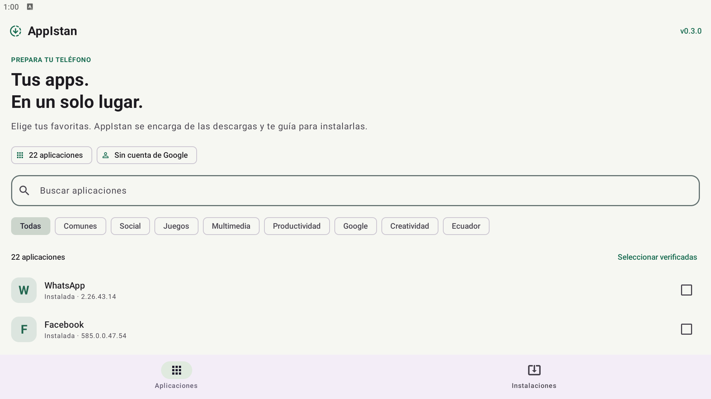

Tus apps de siempre.
En una selección.
Prepara tu nuevo Android sin ir de una descarga a otra. Elige tus aplicaciones y deja que AppIstan organice el resto.
DescargarÚltima versiónAndroid 8 o superior
Sin iniciar sesión en Google. Con las confirmaciones de Android.

Del celular vacío
a tus apps favoritas.
Menos búsquedas, menos descargas por separado. Tú decides qué instalar.
Elige
Busca las aplicaciones disponibles o entra en Comunes para encontrar Facebook, WhatsApp, TikTok y Messenger.
Descarga
AppIstan revisa Play Services y descarga y verifica todo el lote antes de comenzar a instalar.
Confirma
Cuando terminen las descargas, aprueba las instalaciones de Android una tras otra.
¿Ya la tienes? La actualizamos.
Si hay una versión compatible más reciente y su firma permite actualizar, AppIstan conserva la instalación existente y sus datos.
Antes de empezar
¿Necesito una cuenta de Google?
Para usar AppIstan, no. Las aplicaciones que instales pueden pedir sus propias cuentas para funcionar.
¿Qué aplicaciones aparecen?
El catálogo incluye aplicaciones con una fuente de descarga comprobada y una firma original corroborada. Las opciones sin una fuente utilizable se retiran, y se filtran las incompatibles con la versión de Android o el procesador del dispositivo. La disponibilidad de las fuentes puede cambiar.
¿Cómo instalo AppIstan?
Descarga el APK y ábrelo en tu Android. Si el sistema lo solicita, permite instalar desde el navegador o gestor de archivos que estés usando. Al comenzar tu primer lote, AppIstan te guiará para autorizar sus instalaciones.